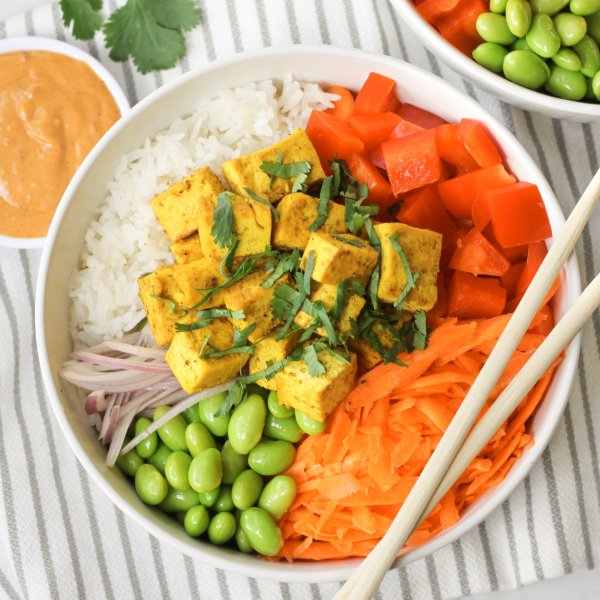

Baked Tofu Rice Bowl with Edamame, Cilantro & Spicy Peanut Sauce

Nutrition (per serving)
695.5 kcalCalories
36.3 gProtein
62 gCarbs
36.7 gFat
Full nutrition table
| Calories | 695.5 kcal |
| Total fat | 36.7 g |
| Saturated fat | 4.6 g |
| Trans fat | 0 g |
| Cholesterol | 0 mg |
| Sodium | 53.2 mg |
| Carbohydrates | 62 g |
| Fiber | 10 g |
| Sugars | 8.5 g |
| Protein | 36.3 g |
| Potassium | 1119.8 mg |
| Calcium | 402 mg |
| Iron | 8.6 mg |
| Vitamin A | 273 IU |
| Vitamin C | 87.4 mg |
| Vitamin D | 0 IU |
Cookware
Ingredients
- 2 mediumcarrots
- ½ small bunchcilantro
- 2 cupsedamame
- 2 (12 oz) pkgextra firm tofu
- 1 cupjasmine rice
- 2red bell peppers
- 1shallot
- black pepper
- chili-garlic sauce
- cinnamon, ground
- cumin, ground
- garlic powder
- natural peanut butter
- rice vinegar
- salt
- soy sauce
- toasted sesame oil
- turmeric, ground
Steps
- Preheat oven to 450°F.
- Cut tofu in half along the long side. Sandwich tofu between clean towels or paper towels and place on a baking sheet pan. Place a cutting board with something heavy on top and set aside to press out excess water.2 (12 oz) pkg extra firm tofu
- Meanwhile, using a strainer or colander, rinse the rice under cold, running water, then drain and transfer to a medium saucepan. Add water and bring the mixture to a boil over high heat.1 cup jasmine rice
2 cup water - Once the liquid comes to a boil, stir the mixture, cover the saucepan, and reduce heat to low. Cook rice until liquid is fully absorbed, 15-18 minutes. Once done, remove rice from the heat and let it stand, still covered, for 5 minutes.
- While the rice is cooking, place oil and spices in a medium bowl; stir to combine the spice paste.2 tbsp toasted sesame oil
1 tsp garlic powder
1 tsp salt
½ tsp black pepper
½ tsp cumin, ground
½ tsp turmeric, ground
¼ tsp cinnamon, ground - Medium dice tofu, add to the bowl with the spice paste, and gently toss to coat. Transfer tofu to a large baking sheet and spread out in a single layer. (Reserve bowl for later use.)
- Place baking sheet in the oven (it doesn't have to be fully heated) and bake, tossing halfway through, until tofu is golden brown, about 20 minutes. Remove from oven.
- Meanwhile, place peanut butter, soy sauce, water, vinegar, oil, and chili-garlic sauce in the reserved bowl. Whisk to combine the sauce and set aside.¼ cup natural peanut butter
¼ cup soy sauce
¼ cup water
2 tbsp rice vinegar
2 tbsp toasted sesame oil
4 tsp chili-garlic sauce - Wash and dry the fresh produce.2 red bell peppers
2 medium carrots
½ small bunch cilantro - Trim, seed, and medium dice bell peppers; place on a large plate.
- Peel, trim, and coarsely grate carrots; add to the plate with the bell pepper.
- Peel and thinly slice shallot lengthwise; add to the plate and set aside.1 shallot
- Place edamame in the colander and rinse under hot, running water (from the tap) to defrost; set aside to drain further.2 cups edamame
- Shave cilantro leaves off the stems; discard stems and mince the leaves.
- To serve, divide rice between bowls; top with baked tofu, bell pepper, carrot, shallot, edamame, and cilantro. Drizzle with sauce and enjoy!